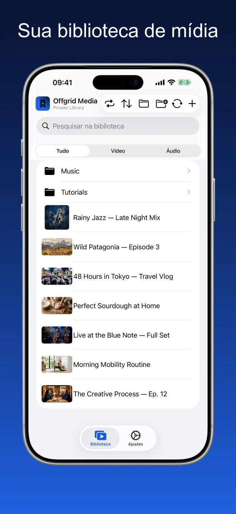
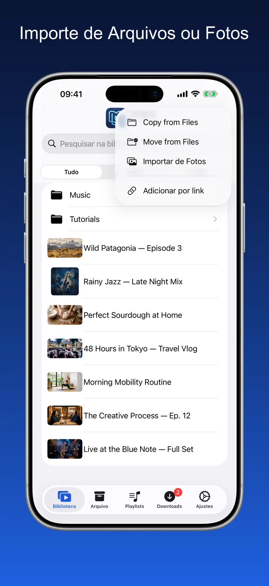
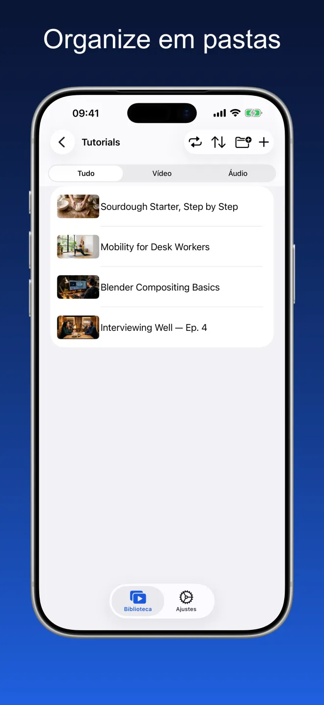
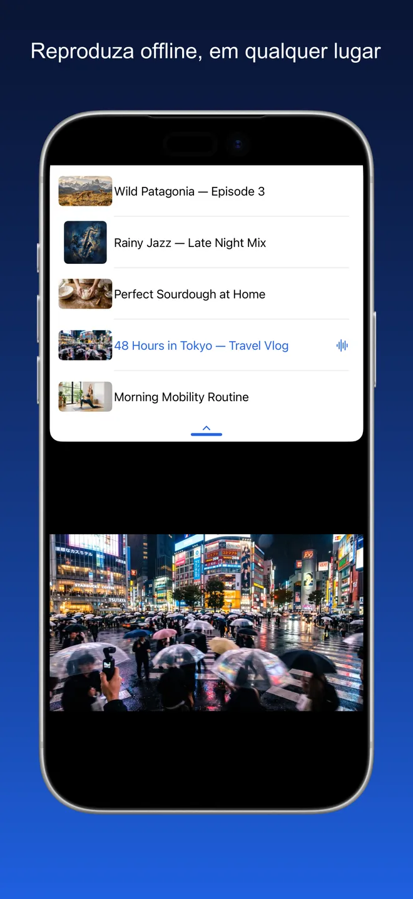
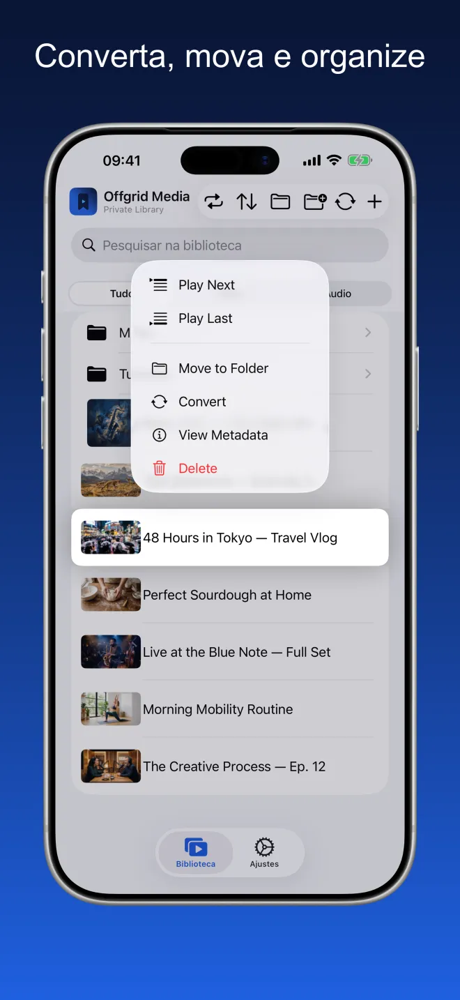
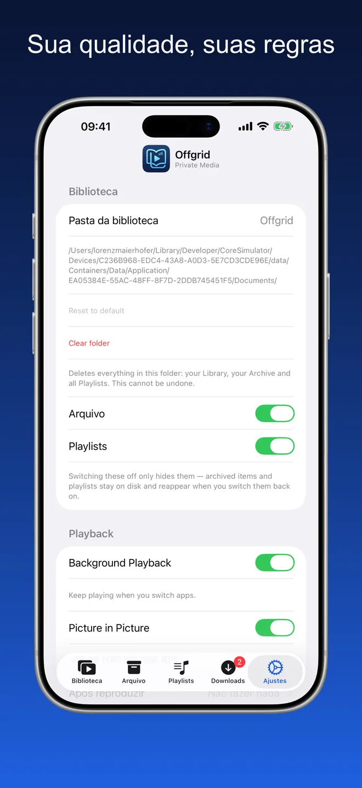

Offgrid Media · Biblioteca privada
Tudo o que você guarda,
offline.
Traga os vídeos e áudios que você já tem — de Arquivos, de Fotos ou por um link que você tem o direito de guardar — e reproduza tudo offline, em um único lugar organizado.
Experimente. A rede está desligada — sua biblioteca continua tocando.

Um lugar organizado para as mídias que são suas
Pastas, busca e filtro por vídeo ou áudio. As miniaturas vêm do próprio arquivo, e a capa e os metadados são preservados.





Importe, organize, reproduza
Importe de Arquivos ou Fotos
Organize em pastas
Reproduza offline, em qualquer lugar
Um player de verdade, não uma pasta de arquivos
Tudo abaixo funciona com a rede desligada.
Importe de Arquivos e Fotos
Adicione vídeos e áudios do iCloud Drive, do seu dispositivo ou da sua fototeca. Tudo chega à sua biblioteca, pronto para tocar.
Organize do seu jeito
Crie pastas, mova itens entre elas e pesquise em tudo o que você guardou. Filtre por vídeo ou áudio quando quiser focar.
Feito para o offline
Depois que algo está na sua biblioteca, fica no seu dispositivo. Sem buffer, sem precisar de conexão, sem nada transmitido de lugar nenhum.
Um player de verdade
Reproduza em sequência ou aleatoriamente, retome de onde parou, monte a fila e use Picture in Picture enquanto usa outros apps. A capa e os metadados são preservados.
Áudio em segundo plano
Continue ouvindo ao trocar de app ou bloquear a tela.
Escolha a qualidade
Defina sua qualidade preferida uma vez nos Ajustes — a melhor disponível, 720p, 480p, 360p ou somente áudio.
Sem conta. Sem anúncios. Sem rastreamento.
O Offgrid Media guarda tudo localmente no seu dispositivo. Nada é enviado, nada é compartilhado e nenhuma conta é necessária.
Nada a coletar, porque não há para onde enviar
O Offgrid Media não tem conta nem servidor próprio. O manifesto de privacidade da App Store declara nenhum rastreamento e nenhum dado coletado.
Perguntas frequentes
Não. Depois que algo está na sua biblioteca, fica no seu dispositivo e toca com a rede desligada. Nada é transmitido durante a reprodução, então não há buffer nem conexão para cair.
Em uma pasta no seu dispositivo, dentro do armazenamento do app. Você pode escolher outra pasta nos Ajustes e, como o app funciona com o app Arquivos, dá para ver os mesmos arquivos por lá. Nada é enviado e não há sincronização na nuvem.
Importando de Arquivos (iCloud Drive ou do aparelho), da sua fototeca, ou adicionando por um link que você tem o direito de guardar. A importação é o caminho principal; o link é uma conveniência secundária.
Sim. Ative o áudio em segundo plano nos Ajustes e a reprodução segue quando você troca de app ou bloqueia a tela, com título, capa e controles na tela bloqueada e na Central de Controle. O vídeo pode flutuar sobre outros apps com Picture in Picture.
Não. O Offgrid Media não tem conta, servidor, análise nem SDKs de terceiros. O manifesto de privacidade da App Store declara nenhum rastreamento e nenhum dado coletado. A única permissão pedida é a de notificações.
Nada. Sem assinatura, sem compras no app, sem anúncios.
Adicione apenas conteúdo que você tem o direito de guardar. O cumprimento dos termos de serviço de qualquer plataforma e das leis aplicáveis é de sua exclusiva responsabilidade.
Sua biblioteca. Seu dispositivo. Sem precisar de sinal.
O Offgrid Media é grátis, para iPhone e iPad, em 11 idiomas.